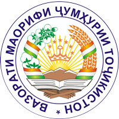

Дар бораи мо
Лоиҳаи USAID "Ҳамроҳ бихонем" бо ташабуси Ҳукумати Тоҷикистон ва Вазорати маориф ва илми ҶТ кӯшиши идомаи ислоҳоти соҳаи маорифро, ки дар Стратегияи Миллии Рушди Маориф дар давоми солҳои 2016-2020 дастгирӣ мекунад.
|  | ||
| USAID Сарпараст |
Вазорати Маориф ва Илм лоиҳаро дастгирӣ мекунад |
Chemonics international Inc. Ташкилоти татбиқкунанда |
Кормандон
| Лутфулло Бозиев Мутахасиси таълими минтақавӣ |
Сироҷидин Алимов Ҳамоҳангсози назорат ва арзёбӣ |
Мақсадҳо ва дастовардҳои лоиҳа
Мақсади асосии Лоиҳаи USAID «Ҳамроҳ бихонем» беҳтар намудани натиҷаҳои хониши хонандагони синфҳои ибтидоии Ҷумҳурии Тоҷикистон дар мактабҳои зерҳадафи лоиҳа аст. Лоиҳаи панҷсола дар самти зиёд намудани дастрасӣ ба маводи босифати хониш, омӯзиши омӯзгорон оид ба таълими хониш, муаррифии усулҳои арзёбӣ барои такмили малакаҳои хониш, ҷорӣ намудани навовариҳо ва рушди ҳамкориҳо барои дастгирии дастовардҳои таълимии хониш, инчунин рушди дастгирии ҳукумат дар инкишофи хониш фаъолият менамояд.
Лоиҳаи USAID “Ҳамроҳ бихонем” тамоми чорабиниҳоро бо Вазорати маориф ва илм ҳамоҳанг намуда дар вилояти Хатлон бо Раёсати маорифи вилоят ва шӯъбаи он дар Кулоб, бахшҳои Донишкадаи ҷумҳуриявии такмили ихтисос ва бозомӯзии кормандони соҳаи маориф дар Бохтар ва Кӯлоб, аз ҷумла бо шӯъбаҳои маорифи ноҳияи вилоят ҳамкории зич намуд. Бо мушовирони синфҳои ибтидоии сохторҳои мазкур ва бо сохторҳои Вазорат чорабиниҳои омӯзишӣ доир намуда шуданд.

Дар тӯли тамоми фаъолиятҳои лоиҳа, мо тавонистем бо 75% мактабҳо, муаллимон ва хонандагони вилоятҳои Хатлон, Суғд ва Бадахшон, ноҳияҳои тобеи ҷумҳурӣ ва Душанбе ҳамкорӣ кунем.

Лоиҳа инчунин фаъолиятҳои хониши беруназсинфиро бо ҷалби оилаҳо, ҷомеаҳо ва бахши хусусӣ дастгирӣ хоҳад кард. Дар ҳама фаъолиятҳо, лоиҳа баробарии гендерӣ ва равишҳои фарогирро, аз ҷумла барои кӯдакони маъюб, татбиқ мекунад.
ТАДБИРҲОИ АСОСИИ ЛОИҲА:
- Харидорӣ ва ё таҳия намудани тақрибан 850,000 адад маводҳои хониш бо забонҳои тоҷикӣ ва русӣ, ки ба синну соли хонандагони синфҳои ибтидоӣ мувофиқанд ва стандартҳои таълими салоҳиятноки хонишро дастгирӣ менамоянд.
- Такмили маҳорати касбии 75%-и омӯзгорони синфҳои ибтидоӣ тавассути такмили ихтисос ва малакаҳои омӯзгорон дар таълими усулҳои хониш, инчунин дастгирии муассисаҳои таҳсилоти касбии педагогӣ.
- Дастгирии фаъолиятҳои беруназмактабӣ, ки дар ҷомеа фарҳанги хонишро рушд медиҳанд.
- Таҳияи усулҳои инноватсионие, ки рушди малакаҳои хониши мактаббачагони синфҳои ибтидоиро таъмин месозанд.
- Таъсиси ҳамкориҳои ба рушди дастовардҳои таълим равона гардида, ки натиҷаашон дастрасии беҳтар ба маводи босифати таълимӣ ва фазои беҳтари омӯзиши хониш мебошад
- Рушди муколама оид ба аҳамияти омӯзиш ва такмили малакаҳои хониш.
- Таҳким бахшидани неруи касбии кормандони соҳаи маориф дар тамоми зинаҳо, ба мақсади таъмини муассисаҳои таълимӣ бо маводҳои зарурӣ барои такмил додани дастовардҳои хониш, аз ҷумла хониши бошуурона.
Аз моҳи январи соли 2018 Лоиҳаи “Ҳамроҳ бихонем” бо 435 муассисаи таҳсилоти миёнаи умумӣ (МТМУ) ҳамкорӣ намуда ба чунин натиҷаҳо ноил шуд:
- 2,248 омӯзгорони синфҳои ибтидоии 435 мактаб оид ба усулҳои муосири омӯзиши хониш омӯзонида шуданд. Аз ҳамин 2,248 нафар омӯзгорон, 859 ҳамчун тренерон мавриди омӯзиши иловагӣ қарор гирифтанд, то тавонанд дигар омӯзгорони синфҳои ибтидоиеро, ки имконияти ширкат варзидан дар омӯзишро надоштанд, дар мактабҳояшон таълим диҳанд.
- 423 нафар директорон ва 450 китобдорони 435 мактаби мазкур доир ба фароҳам овардани имконият ба хонандагони худ ҷиҳати соҳиб шудан ва инкишофи малакаҳои китобхонии онҳо тавассути чорабиниҳо ва фаъолиятҳои доирнамудани мактаб ва китобхона ва ҳамкории зич бо падару модарон ҷиҳати дастгирии ҳадафи мазкур омӯзонида шуданд.
- Бо ҳадафи ба муассисаҳои таълимӣ фароҳам овардани имконият ҷиҳати таъмини хонандагони синфҳои ибтидоии худ бо адабиёти кӯдаконаи ба синну сол мувофиқ, Лоиҳаи “Ҳамроҳ бихонем” ба 435 мактаби мазкур бо теъдоди умумӣ 57,110 китоб тақсим намуд. Аз ин шумора, 47,382 китоб бо забони тоҷикӣ ва 9,728 китоб бо забони русӣ тақсим карда шуд. Ба ҳамаи мактабҳои синфҳои русӣ надошта як маҷмӯӣ (19 номгӯй) адабиёти кӯдакона бо забони русӣ дастрас карда шуд.
- Ба 3 истироатгоҳи (лагери) тобистонаи вилоят 720 китоб тақсим карда шуд.
- Лоиҳаи “Ҳамроҳ бихонем” 65 намояндаи раёсатҳои маорифи вилоят, шӯъбаҳои маорифи ноҳия, бахшҳои вилоятии Донишкадаи такмили ихтисос ва бозомӯзии кормандони соҳаи маориф, донишгоҳҳои педагогӣ ва мактабҳои вилоятро ба ҳайси тренерони миллӣ ва минтақавии барнома омӯзонид.
- Лоиҳа 870 роҳбаладони сатҳи мактабиро омӯзонида, барои тақвият бахшидан ва дастгирии омӯзишҳои сатҳи мактабӣ омода намудааст.